Universidad Central de Venezuela
Profesor: Marcel Castro | Mayo 2026
Introducción al Modelado
Casos de Uso
Diagramas de Interacción
Dinámica y Cierre
La abstracción semántica. La esencia del sistema.
La representación gráfica de ese modelo.
Nota. Adaptado de: Stack Overflow (2021). What is the difference between a diagram and a model? https://stackoverflow.com/questions/65663285/
Anticiparse antes de la primera línea de código.
Planificación y Análisis (Foco UML)
Diseño y Desarrollo
Pruebas y Mantenimiento
Nota. IBM. (s.f.). Software Development Life Cycle (SDLC).
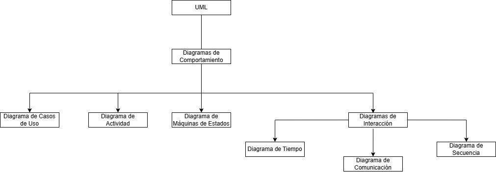
Creado por: Edgar Domador, draw.io.
<<include>>
Dependencia obligatoria.
<<extend>>
Ruta opcional o condicional.
Nota. Visual Paradigm. What is Use Case Diagram?
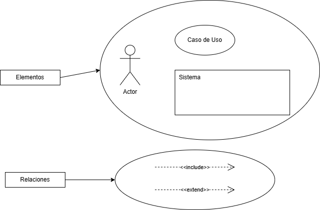
Creado por: Edgar Domador, draw.io.
Modelando interacciones seguras y preestablecidas.
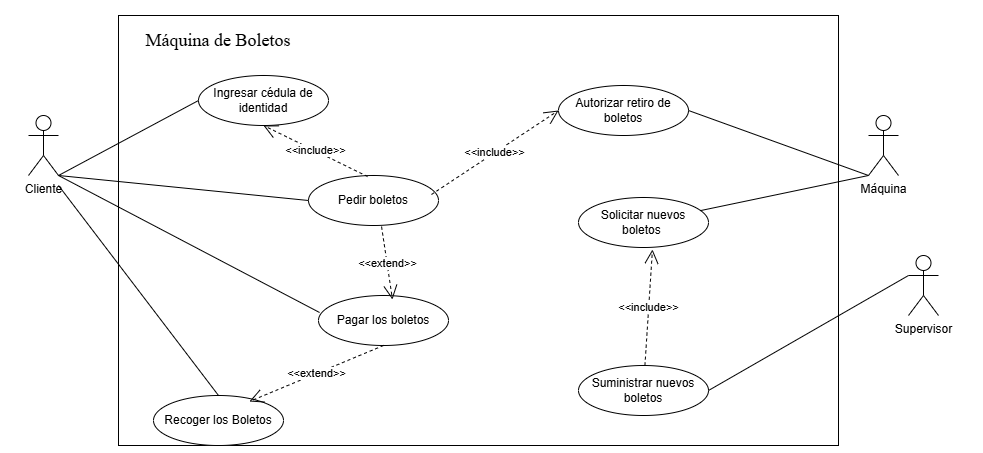
Creado por: Edgar Domador, draw.io. Diagrama de casos de uso simplificado de una máquina de boletos.
Emisión y Recepción
Concordar el diseño detallando el protocolo de mensajes de los participantes en un caso de uso.
Ambigüedad Pre-UML 2.0
Libertades de interpretación que generaban dudas.
Estándar Actual
Sintaxis estricta y clara introducida por OMG.
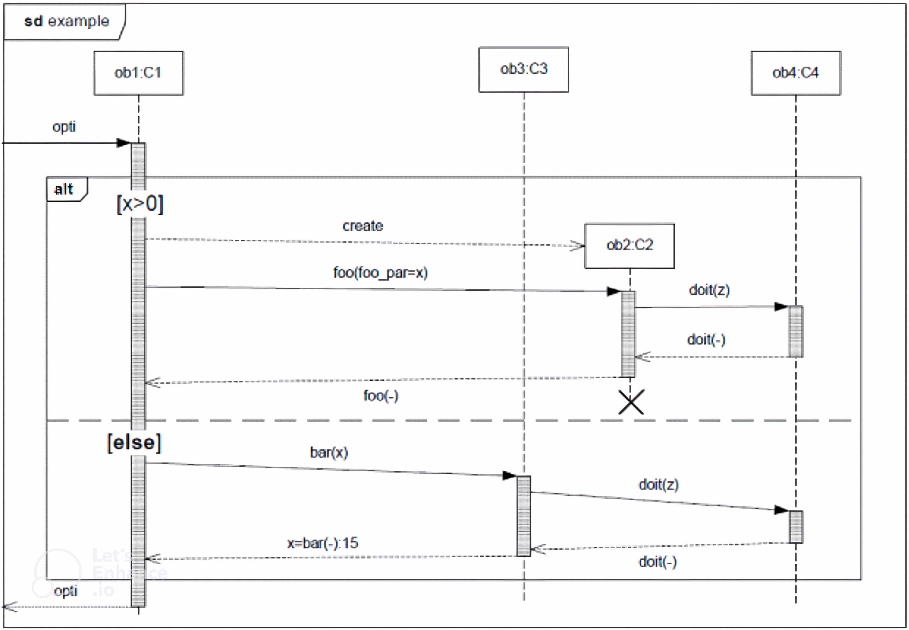
Nota. Tomado de: OMG Unified Modeling Language (OMG UML), Version 2.5.1.
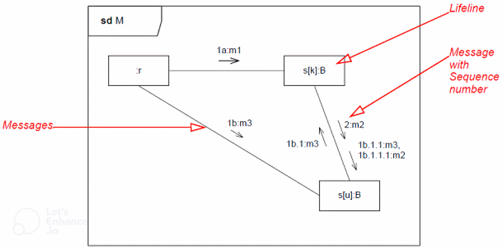
Nota. Tomado de: OMG Unified Modeling Language (OMG UML), Version 2.5.1.
Secuencia (Flujo Temporal)
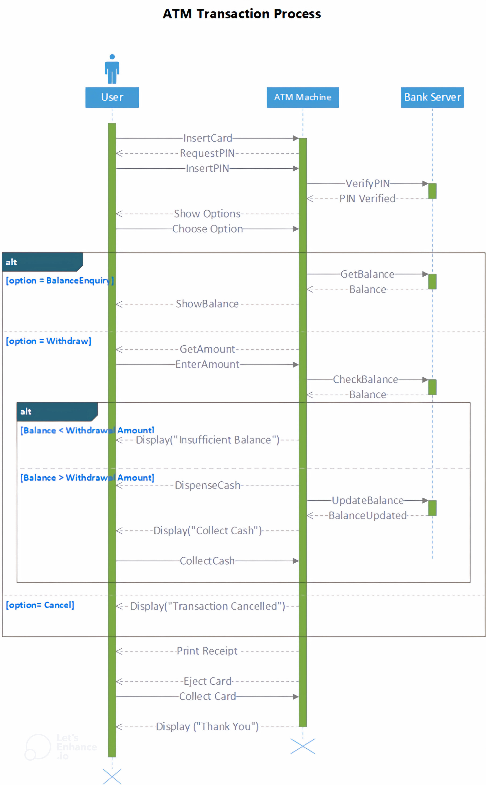
Nota. Secuencia ATM. Crear diagrama de UML, Microsoft, 2026.
Comunicación (Red Física)
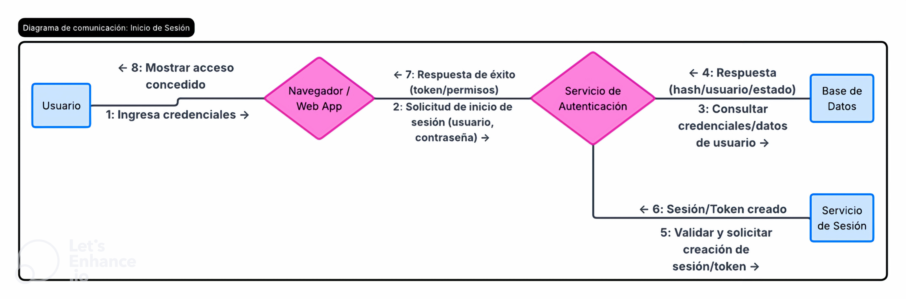
Nota. Comunicación generado con IA de Lucidchart. Lucid Software Inc., 2026.
Líneas de vida horizontales, mensajes precisos y restricciones temporales críticas.
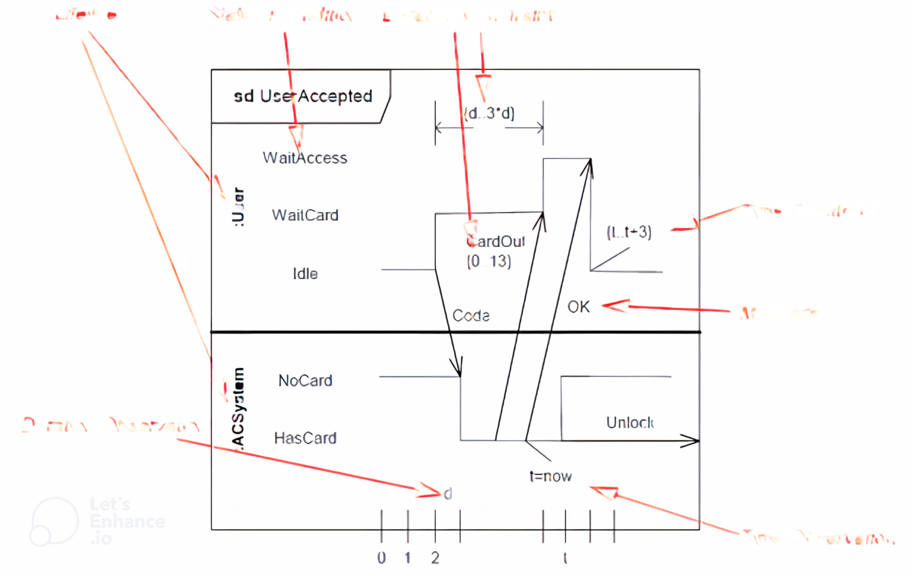
Nota. Tomado de: OMG Unified Modeling Language (OMG UML).
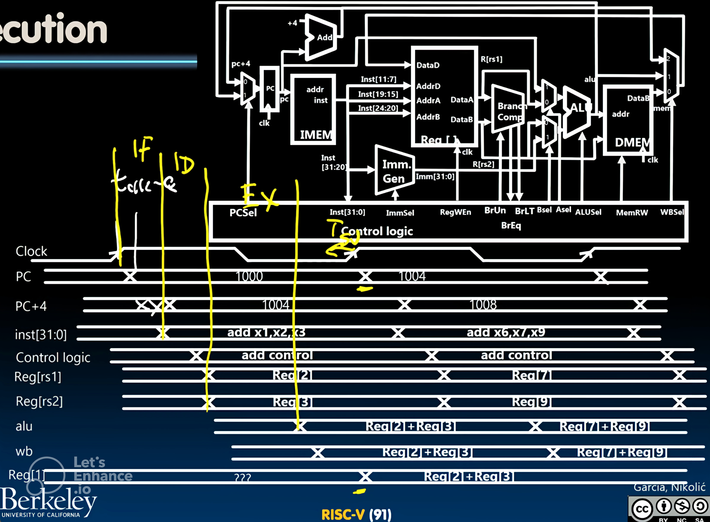
Nota. Datapath RISC-V adaptado de CS 61C, UC Berkeley.
Modelado de la lógica de negocio, flujo de control basado en Tokens y ejecución paralela.
Bifurcación que divide un flujo en múltiples hilos concurrentes.
Unión que sincroniza procesos paralelos antes de continuar.
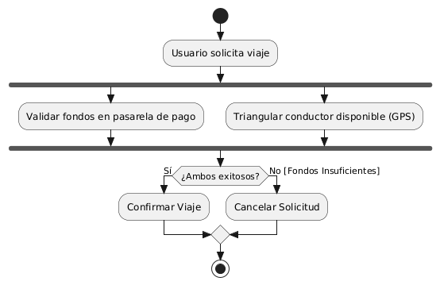
Orquestación Paralela
Ejecución paralela para eliminar latencia. Un hilo verifica la pasarela de pago y el otro la base de datos geoespacial.
Sistemas Reactivos
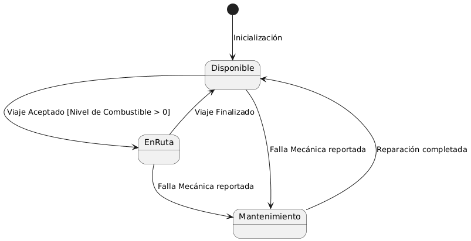
Disponible ➔ En Ruta ➔ Mantenimiento
Lógica de Seguridad:
Si combustible es igual a 0, se bloquea la transición a "En Ruta".
| Diagrama | Qué Resuelve | Cuándo utilizar |
|---|---|---|
| Casos de Uso | Perspectiva del usuario. | Fase de requerimientos, alcance. |
| Secuencia | Orden cronológico estricto de mensajes. | Lógica temporal de caso de uso. |
| Actividad | Flujo de control y concurrencia. | Algoritmos complejos y multihilo. |
| Estados | Ciclo de vida reactivo ante eventos. | Objetos críticos con estados. |
Una base sólida en UML trasciende el código, garantizando un software mantenible, escalable y robusto para el futuro.
Durante la elaboración de este trabajo se emplearon herramientas de inteligencia artificial
únicamente como apoyo para la planificación, estructuración del formato y sugerencias de diseño.
El análisis técnico, la selección de fuentes, redacción y construcción de
diagramas fueron realizados de forma íntegramente humana, asegurando la
comprensión y trazabilidad absoluta de los conceptos expuestos.